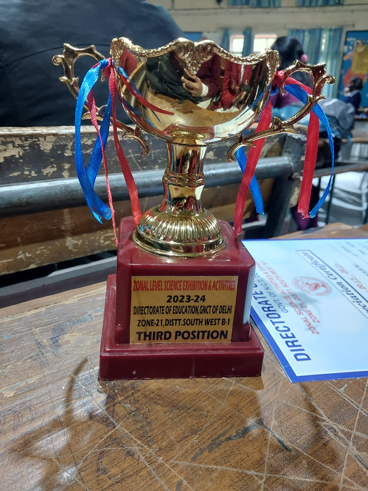
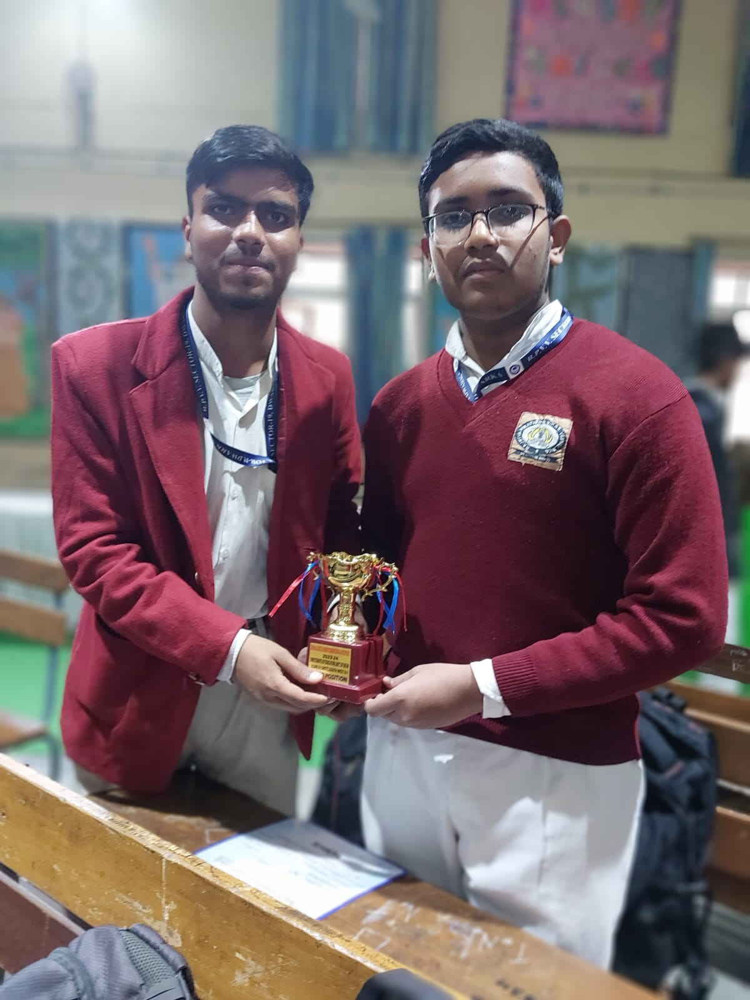
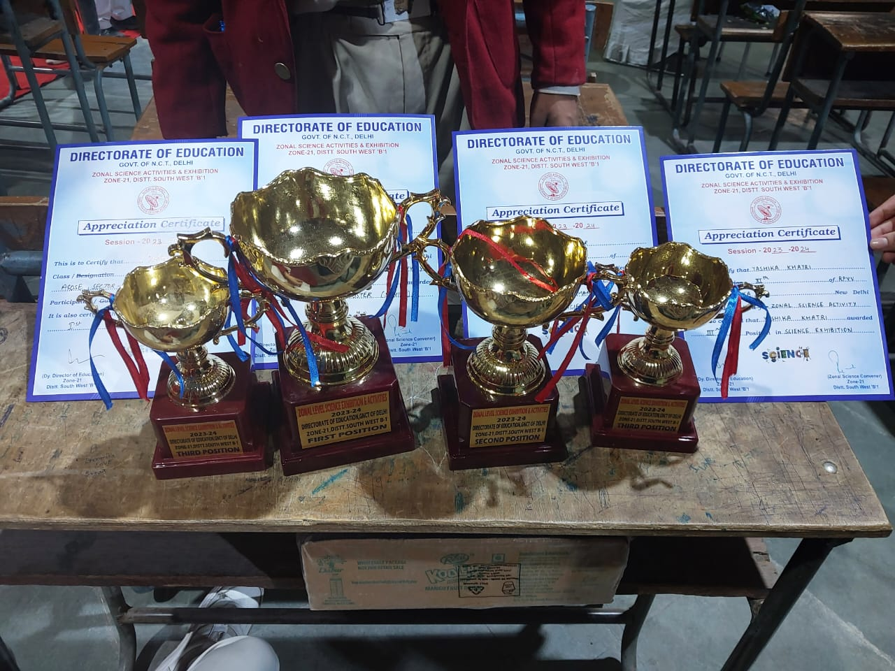

A personal engineering portfolio case study documenting how a dead inherited science exhibition project was reverse engineered, rebuilt, stabilized, and successfully executed under one-week deadline pressure at Rajkiya Pratibha Vikas Vidyalaya, Sector-19 Dwarka for the Zonal Level Science Exhibition held on 29 November 2023.
How a broken lab project became a personal mission
Four phases from dead hardware to exhibition-ready
Five restored modules powering the CARONYCLEANSER ecosystem
An ultrasonic sensor detected incoming vehicles and triggered an Arduino-controlled servo barrier that rotated upward to block unsafe movement. This was the most difficult module — both circuit connections and Arduino logic were unstable and required repeated testing.
An IR sensor beneath the zebra crossing detected object presence and activated a buzzer alert for approaching traffic. This pedestrian awareness mechanism frequently failed during early tests because of loose battery and sensor alignment issues.
Blue LED street lights illuminated automatically when ambient light dropped using an LDR sensing arrangement. Multiple LED joints had to be resoldered and rewired to make the roadway lighting look synchronized across the full model.
A syringe-water pressure hydraulic lift demonstrated vertical parking optimization using a manually actuated single-platform system. Though simple mechanically, it improved the visual appeal of the board by adding another transportation concept.
A four-wheel Avishkaar 2.0 BLE robotic mobility unit controlled via mobile phone strengthened the overall technology impact. Reassembled and tested separately so that the final display had an additional moving robotics element during demonstration.
The central thematic roadway integrated all transportation modules into a single smart mobility ecosystem presented as cleaner and safer urban transportation. Displayed at the exhibition venue under Project Code 09 — the unit that earned 2nd place at zonal level.
An honest account of who carried the technical load
29 November 2023 — the most critical day of execution
Against all odds — and our own expectations
Against our own expectations, the project secured Second Position at the Zonal Level Science Exhibition. The result itself was shocking because until the final hours we were simply trying not to embarrass ourselves with a broken setup.



What this project permanently changed about my engineering mindset